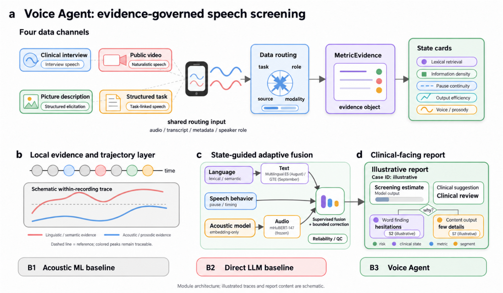
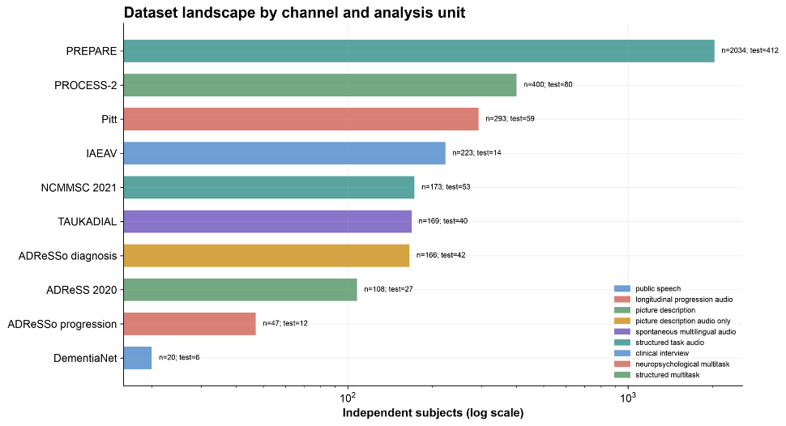
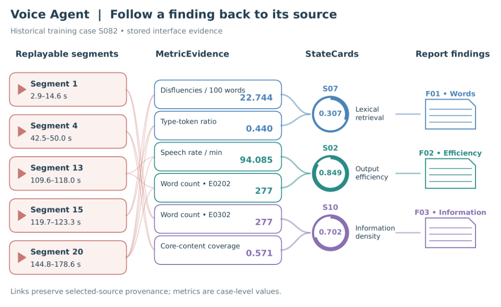
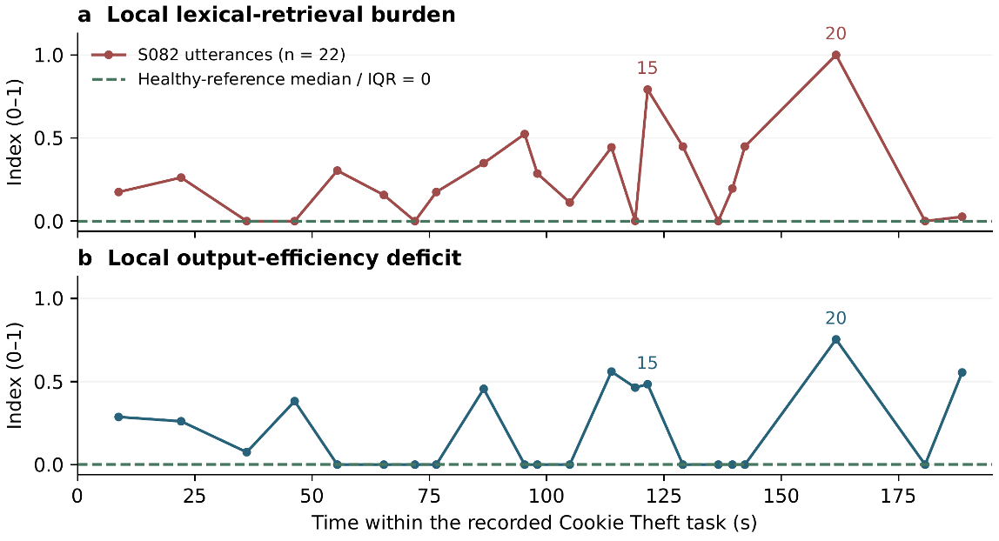
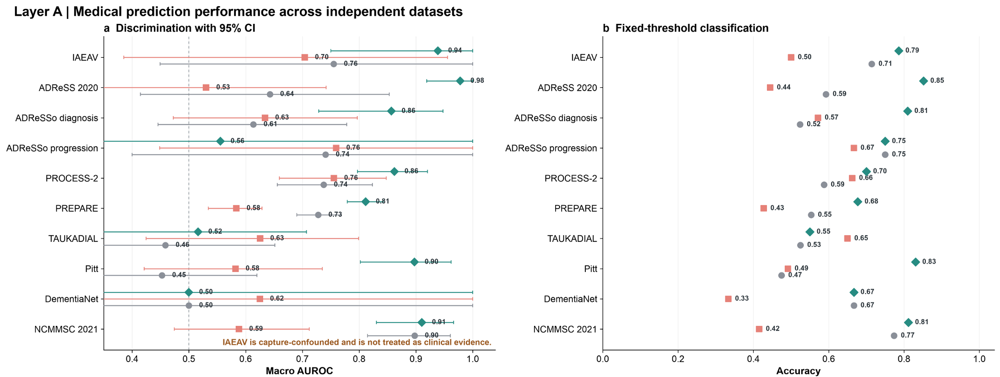
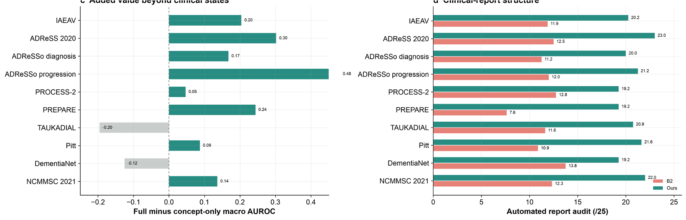

证据进入预测链
State 与 Agent 不是报告装饰。联合校准显式比较 B、J-A、J-S、J-AS，检验 Agent 判断和状态回放是否提供净增益。
核心变化不是让大模型自由给诊断，而是让它在可追溯的 MetricEvidence、StateCard 与源片段上完成结构化判断、有限修订和报告生成。

State 与 Agent 不是报告装饰。联合校准显式比较 B、J-A、J-S、J-AS，检验 Agent 判断和状态回放是否提供净增益。
Agent 独立阅读不含基础概率和真值的证据包；可提出有限修订，但不能伪造测量、参考范围或标签。
每个报告发现都绑定 StateCard、MetricEvidence、源片段、版本与哈希；状态变化后必须重新计算，不能沿用旧判断。
Agent 权重不再由“基础模型不确定”直接决定，而由完整 OOF 验证集上的独立增量联合校准。
除总体指标外，记录每类帮助与伤害、回退率和拒绝原因，禁止通过牺牲一个类别换取总体准确率。
限制两轮语义评估、三项修订操作，并把 token、费用、超时、取消和回退纳入正式结果。





| 项目 | 当前状态 | 可以写入论文的范围 |
|---|---|---|
| 代码验证 | 1,260 passed; 3 skipped | 可写为软件级验证，不等价于临床有效性。 |
| 五个比较臂 | B_raw、B、J-A、J-S、J-AS 已实现 | 可写方法和预注册比较逻辑。 |
| 证据修订 | 盲判、修订、重算、回退与成本边界已实现 | 可写运行机制与可追溯性。 |
| 真实付费 pilot | 审查阻断，未调用 | 不能写 Agent 提升或超过 SpeechCARE。 |
| SpeechCARE 同协议 | 待最终 runner、评分与 OOF 约束通过复审 | 只写比较协议，暂不写优越性结论。 |
J-AS 相对匹配 B 的净增益来自同一保留集，并报告置信区间与配对差异。
更强 Agent 应提高有证据支持的判断或修订质量，而不是增加无依据覆盖率。
HC、MCI、AD 各类伤害受控；无效证据、调用失败和成本不从分母中消失。
本页为汇报版本。涉及患者的原始音频、转录和标签均未打包或上传。